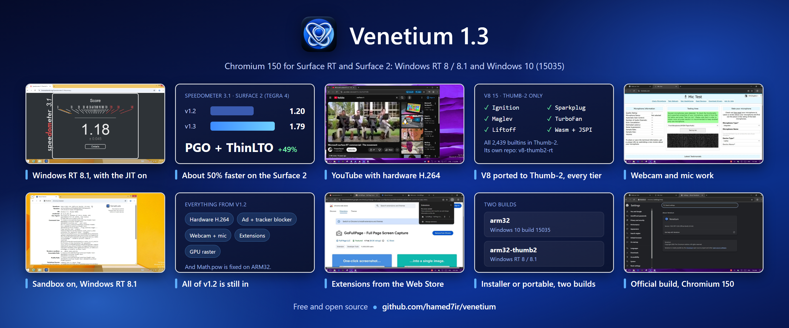

Windows RT 8.1, with the JIT on
PGO profile · functions with counts
From jwa4's 36 sessions on his Surface 2, and mine. Both ARM builds.
New PGO profile, thanks to jwa4
V8 Thumb-2 · WebAssembly
Branch islands
A far jump in a big function goes through an island. JetStream 3's ONNX Runtime and huge Liftoff functions run on RT 8.1.
Big WebAssembly apps on RT 8.x
YouTube with hardware H.264
ANGLE · libGLESv2 + libEGL
v1.3built for size
v1.4built for speed
The GPU process never writes ANGLE's profile, so v1.3 treated all of it as cold code.
ANGLE built for speed
VP9 · AV1 · WebM
<video> filesLocal filesWikimediaBoth ARM builds
Broken since v1.3.1, fixed. YouTube still gets hardware H.264.
WebM files play again
Icon and Start tile
Venetium
.icoYour own
Taskbar, shortcuts and a real Start tile.
Choose your icon and tile
Extensions from the Web Store
Update check
Every 7 days
Venetium asks GitHub for a newer release and shows a bar with a Download link. Nothing installs by itself.
Tells you about new releases
Three builds
arm32Windows 10 build 15035
arm32-thumb2Windows RT 8 / 8.1
x86Windows 10 / 11 PCs
Three builds, x86 is back